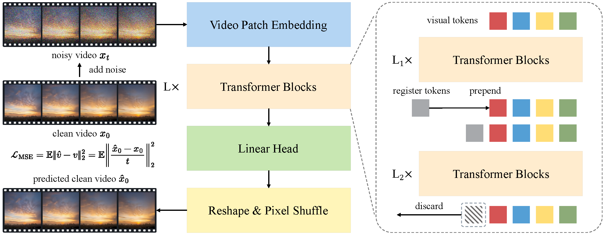
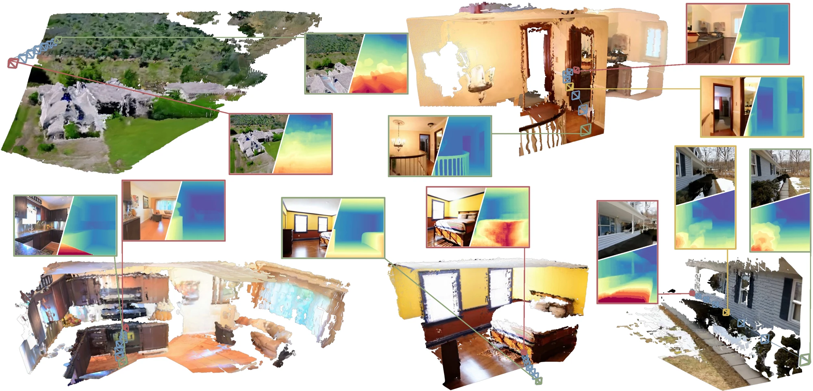

VAE-free DiT for video generation
Following JiT, JVT predicts a clean video from noisy pixels under a rectified-flow objective. Large spatiotemporal patches make direct video modeling tractable.

Abstract
Direct diffusion modeling of high-dimensional raw video data is challenging, and existing pixel-space methods often rely on specialized architectures. We introduce JVT (Just Video Transformer), a simple large-patch DiT-style Transformer for pixel-space video diffusion, without a pretrained autoencoder, auxiliary detailers, cascaded stages, or U-Net-style skip connections. We systematically examine video patch embeddings, register tokens, and adaptive layer normalization to identify design choices that balance generation quality and computational efficiency. The resulting JVT design achieves generation quality competitive with latent diffusion baselines in both class-conditioned and unconditional settings. The pixel-space formulation of JVT also naturally supports joint generation of pixel-aligned modalities. We demonstrate this capability through camera-conditioned RGB-disparity generation, which improves camera following relative to RGB-only baselines and yields explicit scene geometry without an additional reconstruction model at inference. These results highlight the potential of simple DiT-style Transformers for pixel-space video diffusion, and we hope our findings offer useful insights and practical guidance for future research.
Qualitative results on classical benchmarks
16-frame video generation at 256×256 resolution.
UCF101
Video unavailable. Please reload the page to try again.
FaceForensics
Video unavailable. Please reload the page to try again.
SkyTimelapse
Video unavailable. Please reload the page to try again.
Taichi-HD
Video unavailable. Please reload the page to try again.
Pixel-aligned joint generation
Joint generate RGB with its pixel-aligned modalities (e.g. depth, raymap, segmentation, scene flow) directly in pixel space, without information loss in VAE latent space.

Joint generated geometry with videos
Static preview · scroll here to load the interactive results.
Select a point cloud or 3D view to explore it. Drag to orbit, scroll to zoom, right-drag to pan.
Details
All methods share the initial RGB frame and target camera trajectory from RealEstate10K. JVT and Aether w/ depth also receive the same Pi3X depth for the initial frame. Aether w/o depth receives none. Each method's depth for its 8 frames is unprojected with the target cameras into a single colored point cloud. Cross-frame inconsistency can appear as doubled or drifting geometry. “Ground truth” combines real RGB frames with Pi3X-estimated depth, rather than measured depth. Depth receives the same display filtering for every method: latent-patch deblocking and a guided filter.
Camera following
Depth (disparity) helps improve translation of camera following
Loading camera comparisons…
Quantitative evaluation of camera following
| Method | Objective | FVD ↓ | RRA ↑ | RTA ↑ | AUC ↑ | |||
|---|---|---|---|---|---|---|---|---|
| @5° | @30° | @5° | @30° | @5° | @30° | |||
| DFoT | RGB | 35.3 | 99.9 | 100 | 77.7 | 97.4 | 58.3 | 87.2 |
| Geometry Forcing | RGB | 46.8 | 99.8 | 100 | 73.6 | 96.4 | 52.1 | 84.7 |
| LIVE | RGB | 42.5 | 99.1 | 100 | 49.8 | 92.6 | 28.4 | 73.3 |
| JVT (Ours) | RGB | 27.0 | 99.9 | 100 | 72.4 | 96.0 | 52.8 | 84.1 |
| JVT (Ours) | RGB-disparity | 27.5 | 99.9 | 100 | 79.5 | 98.4 | 58.6 | 88.6 |
RRA and RTA report relative rotation and translation-direction accuracy at 5° and 30° thresholds. AUC summarizes their joint error distribution. Camera poses are estimated with Pi3X.
Quantitative results on classical benchmarks
| Method | Resolution | Class-conditioned | Unconditional | |||
|---|---|---|---|---|---|---|
| UCF-101 | UCF-101 | FaceForensics | SkyTimelapse | Taichi-HD | ||
| Latte | 256² | 477.97 | — | 34.00 | 59.82 | 159.60 |
| JVT (Ours) | 256² | 136.5 | 413.5 | 32.86 | 46.58 | 119.1 |
| JVT+RG (Ours) | 256² | 129.2 | 215.9 | 31.80 | 47.80 | 124.3 |
JVT denotes the register-free model, JVT+RG uses register guidance. RG improves UCF-101 results substantially, while its effect on the other datasets varies. Bold and underlined values indicate the best and second-best scores in the full table under the paper's ranking protocol.
All benchmark results and evaluation protocols
| Method | Resolution | Class-conditioned | Unconditional | |||
|---|---|---|---|---|---|---|
| UCF-101 | UCF-101 | FaceForensics | SkyTimelapse | Taichi-HD | ||
| MoCoGAN | 256² | — | 2886.9† | 124.7† | 206.6† | — |
| MoCoGAN-HD | 256² | — | 1729.6† | 111.8† | 164.1† | 144.7‡ |
| VideoGPT | 256² | — | 2880.6† | 185.9† | 222.7† | — |
| StyleGAN-V | 256² | — | 1431.0 | 47.41 | 79.52 | — |
| MoStGAN-V | 256² | — | 1380.3 | 39.7 | 65.3 | — |
| CogVideo | 160² | 626 | — | — | — | — |
| DIGAN | 128² | 465 | 577 | — | 114.6 | 128.1* |
| DIGAN | 256² | — | 1630.2† | 62.5† | 83.11† | — |
| LVDM | 256² | — | 372 | — | 95.2 | 99.0* |
| PVDM | 256² | — | 343.6 | — | 55.41 | — |
| VIDM | 128² | — | — | — | — | 121.9 |
| VIDM | 256² | — | 294.7 | — | 57.4 | — |
| GLOBER | 128² | 151.5 | 239.5 | — | — | 124.2 |
| GLOBER | 256² | 168.9 | 252.7 | — | 78.1 | — |
| OmniTokenizer | 256² | 191 | — | — | — | — |
| VDT | 64² | — | 225.7 | — | — | — |
| FVDM | 256² | 468.23 | — | 55.01 | 106.09 | 194.61 |
| Latte | 256² | 477.97 | — | 34.00 | 59.82 | 159.60 |
| JVT (Ours) | 256² | 136.5 | 413.5 | 32.86 | 46.58 | 119.1 |
| JVT+RG (Ours) | 256² | 129.2 | 215.9 | 31.80 | 47.80 | 124.3 |
† Scores taken from StyleGAN-V, ‡ scores taken from DIGAN. Other baseline scores are sourced from their original papers. Taichi-HD scores marked * use both training and test splits and are excluded from ranking. — denotes an unreported result. JVT uses both training and test splits of UCF-101, and only the training split of the other datasets, following Latte's setting.
Citation
@article{zhou2026jvt,
title = {{JVT}: Just Video Transformer makes pixel-space video diffusion simple},
author = {Jianjun Zhou and Hua Geng and Haoyu Guo},
year = {2026}
journal = {arXiv preprint arXiv: 2611.18549}
}